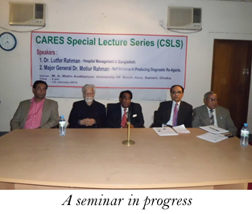
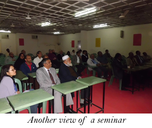
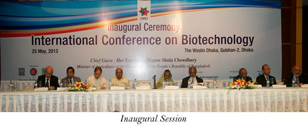

Performance Report
As on June 30, 2013
CARES Committee of Action for Research, Extension and Services)
1. Introduction:
CARES is an organization dealing with many intangibles. This is an organization dedicated for advancing and advocating science and scientific applications for human development in Bangladesh. Amidst our goals are taking scientific research and applications to farmers and promoting those branches of sciences which could bring qualitative changes in the lives and livelihood of common people. For such reasons, our interests include life sciences, biotechnology, agriculture, green technology and rural enterprises. CARES is a forum where some dedicated scientists, academics, eminent persons from the corporate, business and bureaucracy have come together for common good of Bangladesh. It is a non-government non-political development organization, albeit with a difference. The CARES has been visioned as a "virtual" University working together with persons, institutions, organizations and programs to promote and support basic, applied and prototype research of immediate economic value in fields of agriculture, life sciences, small and medium agro-enterprises, green technology and rural enterprises.
Therefore, when an assessment of an organization, that too is just over a year old from the date of its registration with relevant government body, and few months old since we announced ourselves through hosting of the International Conference on Biotechnology on May 25-26, 2013, any such report is bound to show many intangible achievements and a few tangible ones!
With this background, following growth of the organization and performance has to be noted:
2. Institutional:
CARES was registered with the Registrar of Joint Stock Companies of the Government in February 2012. The registration was like receiving a birth certificate; however, we can claim our foundation was laid on August8, 2010 with a meeting of a number of like-minded eminent persons from the cross-section of Bangladesh society and the enrolment of our very first Founding members. CARES moved to its rented accommodation at Banani on December 1, 2011 which gave us a formal address. A skeleton staff is all that CARES has at the moment as office support.
3. Membership:
As a membership based organization, CARES' Members are its driving force. As such, it had earlier set for itself a target of 100 Founding members. During the period under report, total Founding membership has reached the target number due to active networking by some members. Among those who had joined CARES are scientists from home and abroad, and also some eminent business and industry leaders.
4. Holding of Monthly seminars:
Hosting of monthly seminars was part of CARES activities since January, 2012. So far, twelve seminars were held; CARES had to skip some months for some unavoidable reasons and for preparation of the international conference on biotechnology. This activity would resume soon.
5. Research projects:
Two research projects were undertaken in 2012:
1) Study of 'Price Chain' of fresh vegetables from growers in different parts of the country to different kitchen markets in Dhaka city:
The study was funded by CARES and undertaken in February and March, 2012 to assess the impact of increase in vegetable production on farmers and whether they get fair price of their products. Among recommendations of the report are: investment in agro sectors, freeing farmers from the clutches of mahajans and private money lenders by providing them access to institutional lending including cooperatives, private sector initiatives to provide seeds, fertilizer and pesticide at reasonable price, setting up more agro-business initiatives and services, and involvement of farmers as economic partners of enterprises.

2) Araizhazar KAP study:
CARES initiated a Pilot Study of Knowledge, Attitude and Practices (KAP) of the people of Araizhazar, Narayanganj district, related to water, air and soil pollution early in 2012. The object of the study was to appraise the level of the people's knowledge about pollution and also to find out the prevalence of morbidity related to air, water and soil pollution among the study participants.
The report provided interesting perspective of the lack of knowledge of the people and the impact of industrialization on environmental pollution and human health in a peri-urban setting. Further in-depth studies would follow from the findings. The report was presented in a CARES seminar and also at Ibn Sina Medical College.
6. Networking at home:
Endowed with rich scientific and human resources within its memberships, CARES has been building a strong domestic networking with people, institutions and scientific communities. As a result, the Bangladesh Academy of Sciences, the nation's apex institution of scientists, the BCSIR (Bangladesh Council for Scientific and Industrial Research) and the Bangladesh Agricultural University joined hands with the CARES as collaborators in hosting its International Conference on Biotechnology held last month which was well attended.
7. Developing overseas network:
CARES has been actively seeking establishment of overseas network. Dr. M. Shamsher Ali has been active in his scientific circles in some Asian countries. Similarly, Dr. K. M. S. Aziz has been in contact his peers and formers students who are now prominent NRB scientists abroad. Through Dr. Aziz, CARES has been making inroads in the NRB circle in the USA. Dr. Aziz represented CARES in a negotiation with ASBM (American Society of Bangladeshi Microbiologists). Subsequently, an ASBM delegation had a meeting with CARES officials in Dhaka on January 6, 2013. In the meeting both sides agreed that CARES and ASBM could work and cooperate with each other on fields to be agreed mutually and through institutional mechanism of concluding a MOU. A draft MOU had been discussed. It will soon be signed between the two sides.
CARES has been exploring the possibility of establishing a regional and sub-regional network for peer reviewing research proposals and protocols where CARES resource persons could review projects. The recently concluded CARES International Conference on Biotechnology (ICB) provided an excellent opportunity to establish contact with some leading scientists of the region. Two leading Indian scientists have shown interest to receive research students in their state-of-art Labs from Bangladesh in collaboration with CARES. Such opportunity will help acquire advance skills and provide expanded research possibilities. CARES Chairman's earlier (March 2013) visit to Bangkok and meeting with some University academics and administration has also promised similar collaboration with some leading Thai universities.
CARES Chairman Dr. Majeed Khan has recently been elected to the Advisory Council of the AUAP (Association of Universities of Asia Pacific).Dr. Ruben C. Umaly, Secretary General of AUAP (Association of Universities of Asia Pacific) and in-charge for International Cooperation of Siam University, Bangkok has agreed to coordinate with CARES for possible cooperation in the activities of the two institutions. According to an e- mail from Dr. Umaly, "both the Siam University and AUAP would gladly welcome any proposal for collaboration in either research activities in our Lifelong Education Programs where we hold short term training courses or collaborative activities research and academic programs with Universities from the Region."
Thus two distinct regional and institutional linkages have emerged out of such efforts from CARES which are quite promising and need to be followed up for the advancement of research and acquisition of innovative knowledge. Such collaboration would help upgrade existing research and institutional facilities within the country and also develop advanced human skills.
8. The International Conference on Biotechnology (25-26 May, 2013):
A. The two-day event held on 25-26, 2013 at the Westin Dhaka was participated by around280 scientists, researchers, academia, business-industry leaders, Founding and Primary members of CARES and interested students. Most public and some private universities were represented. Collaboration of the Bangladesh Academy of Sciences, the BCSIR, the Bangladesh Agricultural University and a NRB organization-American Society of Bangladesh-affiliated Microbiologists (ASBM) had made the event highly representational of eminent institutes and organizations.
